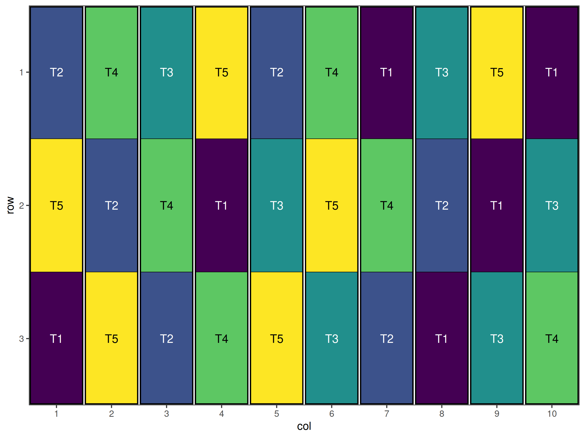

Custom Objective Functions and Advanced Options for Optimisation in speed
2025-11-04
Source:vignettes/custom_objective_functions.qmd
Introduction
While the speed package provides a range of excellent default optimisation settings for most experimental designs, researchers may need to customise the optimisation process for specific requirements. This vignette demonstrates how to:
- Create custom objective functions for specialised optimisation goals
- Adjust simulated annealing parameters for better performance
- Handle complex constraints and specialised design requirements
- Monitor and control the optimisation process
- Troubleshoot optimisation issues
Understanding these advanced features allows researchers to fully leverage the speed package for complex or non-standard experimental design challenges.
Understanding the Optimisation Process
Simulated Annealing Basics
The speed package uses simulated annealing, a probabilistic optimisation algorithm that:
- Starts with an initial design layout
- Proposes modifications (treatment swaps, moves)
- Accepts improvements and sometimes accepts worse solutions
- Gradually reduces acceptance of worse solutions (“cooling”)
- Converges to an optimised layout
Default Optimisation Objectives
The package’s default objectives typically focus on:
- Minimising treatment adjacency - reducing neighbour effects
- Maintaining spatial balance - even treatment distribution
- Respecting design constraints - block structure, replication
- Optimising statistical efficiency - improving precision
When to Customise Optimisation
You may consider custom optimisation when:
- Specific neighbour relationships are more important than others
- Non-uniform field conditions require weighted optimisation
- Complex constraints aren’t handled by default settings
- Multiple competing objectives need balanced consideration
- Performance tuning is needed for large or complex designs
Custom Objective Functions
Understanding Objective Function Structure
Objective functions in speed typically follow a standard structure:
- Input: Current design layout and associated data
- Process: Calculate penalties or scores for the input layout
- Output: Single numeric value (lower = better for minimisation)
Custom objective functions are a powerful way to tailor the optimisation process to the unique requirements of your experiment. While the default objectives in speed are designed to handle a wide range of common scenarios such as minimising neighbour effects, balancing treatments spatially, and respecting block structures, real-world experiments often present additional or alternative priorities. For example, you may need to:
- Enforce strict replication or co-occurrence rules for treatments
- Optimise for specific spatial or agronomic constraints
- Balance multiple objectives simultaneously (e.g., efficiency and logistics)
- Incorporate domain knowledge or experimental goals not captured by default settings
In these cases, writing a custom objective function allows you to explicitly define what constitutes a “good” design for your context. This flexibility is especially valuable for advanced or non-standard designs, or when you want to experiment with new optimisation strategies.
Motivating Example
A classic example of a case where the default objective function doesn’t capture all the design constraints is a Balanced Incomplete Block Design (BIBD), where each treatment appears in a fixed number of blocks, and every pair of treatments occurs together the same number of times. Achieving this balance is critical for valid statistical inference, but it can be challenging to obtain such a layout, especially for large or complex experiments. Due to the number of constraints involved, there are specific and limited combinations available for the layout of the design, and the default objectives may not be sufficient to guide the optimisation process towards a valid BIBD layout.
By writing a custom objective function, you can directly penalise deviations from the BIBD requirements such as unequal treatment replication or unequal co-occurrence of treatment pairs, thus guiding the optimisation towards a valid or near-optimal BIBD solution. The following example demonstrates how to structure such a function and integrate it into the speed optimisation workflow.
Writing a Custom Objective Function
Let’s now walk through the process of building a custom objective function for a Balanced Incomplete Block Design (BIBD). We’ll break down the logic behind each part of the function, show how to implement it in R, and discuss how it addresses the key requirements of a BIBD. This example will illustrate how you can translate design constraints into code, and how to use your custom function within the speed optimisation workflow.
Constraints
A BIBD has the following properties:
Characteristics:
- Each treatment appears in exactly blocks
- Each block contains exactly treatments
- Each pair of treatments appears together in exactly blocks
- Perfect balance but limited parameter combinations
Parameters:
- = number of treatments
-
= number of blocks
- = number of blocks containing each treatment
- = number of treatments per block
- = number of blocks containing each pair of treatments
- and
Most of constraints can be handled by careful design of the layout and the default objectives in speed package, such as minimising neighbour effects and ensuring spatial balance. However, the co-occurrence of treatments is more complex and requires custom handling.
Custom Objective Function Implementation
Firstly, we need to create a function that evaluates the co-occurrence of treatments in the design. The function will count the number of times each pair of treatments appears together, and simply return a list of the counts. This will also help us to check if the design meets the BIBD requirements later.
Given an input data frame design_df with a column for blocks and a column for treatments, this function will return a list of treatment pairs (provided in the column given by the swap argument) and their counts across the blocks. Now we need to incorporate this into a custom objective function that uses this to evaluate the BIBD properties. To be able to include it within the speed optimisation algorithim, we need to ensure that the function returns a list with a score element, which is a single numeric value representing the optimality of the layout. The speed package is set up to minimise this score, so lower values are better, and may require taking the reciprocal of the score if higher values mean more optimal layouts in the context of a custom objective function.
bibd_objective_function <- function(
layout_df,
swap,
spatial_cols,
row_column = "row",
col_column = "col",
...) {
adj_score <- calculate_adjacency_score(layout_df, swap, row_column, col_column)
bal_score <- calculate_balance_score(layout_df, swap, spatial_cols)
pairs <- get_cooccurrence(layout_df, swap)
pair_bal_score <- var(as.numeric(pairs))
return(list(
score = round(adj_score + bal_score + 10*pair_bal_score, 10)
))
}This function follows a very similar structure to the default objective functions in speed, but it adds a specific penalty for the co-occurrence of treatments. The get_cooccurrence function is called to calculate how many times each pair of treatments appears together, and the variance of these counts is used as a penalty term in the final score. As increasinly more treatment pairs appear the same number of times together, the variance of the pairs co-occurrence decreases, becoming more optimal. The 10*pair_bal_score term is a weight that can be adjusted based on how important the co-occurrence balance is relative to the adjacency and balance scores. This function could be further customised to include additional penalties or adjustments based on specific design requirements, however the current implementation provides a solid foundation for optimising a BIBD layout. Also, given that custom objective functions are user-defined, they don’t require the same level of error-checking as the default functions, so we can keep the implementation relatively simple.
Using the Custom Objective Function
Now that we have our custom objective function, we can use it in the speed optimisation process. The speed package allows us to specify a custom objective function using the objective_function argument. We also need to ensure that our layout data frame has the necessary columns for blocks, treatments, and spatial coordinates.
The following parameters will allow us to produce a valid BIBD layout:
-
v= 5 (number of treatments) -
b= 10 (number of blocks) -
k= 3 (number of plots per block) -
r= 6 (number of replicates of each treatment) -
lambda= 3 (number of times each treatment appears together)
Setting Up the Design Data Frame
We will create a data frame representing the BIBD layout, and then run the speed optimisation with our custom objective function.
# Create the data frame
bibd_df <- initialise_design_df(items = 5, nrows = 3, ncols = 10,
block_nrows = 3, block_ncols = 1)
head(bibd_df)
#> row col treatment row_block col_block block
#> 1 1 1 T1 1 1 1
#> 2 2 1 T2 1 1 1
#> 3 3 1 T3 1 1 1
#> 4 1 2 T4 1 2 2
#> 5 2 2 T5 1 2 2
#> 6 3 2 T1 1 2 2The initialise_design_df function creates a data frame with 5 treatments, arranged in 10 blocks, with each block containing 3 plots. The block_nrows and block_ncols parameters define the layout of the blocks.
Figure 1 shows the initial layout of the BIBD design. The treatments are systematically assigned to blocks, but we need to randomise this design, and ensure that the co-occurrence of treatments meets the BIBD requirements.
Performing the Optimisation
Now we can run the optimisation using our custom objective function simply by passing the name to the speed function via the obj_function argument. We will also specify the swap argument to indicate which column contains the treatments, and the spatial_factors argument to include the block, row, and column information for spatial balance. This will allow the optimisation to consider both the adjacency of treatments and their spatial distribution across the blocks, while the custom objective function will ensure that the co-occurrence of treatments is balanced according to the BIBD requirements. Note also that we set options(speed.random_initialisation = FALSE) to ensure that the initialisation of the design is randomised.
options(speed.random_initialisation = FALSE)
result <- speed(bibd_df,
swap = "treatment",
spatial_factors = ~ block + row + col,
obj_function = bibd_objective_function,
seed = 42)
#> row and col are used as row and column, respectively.
#> Optimising level: single treatment within whole design
#> Level: single treatment within whole design Iteration: 1000 Score: 6 Best: 6 Since Improvement: 360
#> Level: single treatment within whole design Iteration: 2000 Score: 6 Best: 6 Since Improvement: 1360
#> Early stopping at iteration 2640 for level single treatment within whole design
result
#> Optimised Experimental Design
#> ----------------------------
#> Score: 6
#> Iterations Run: 2641
#> Stopped Early: TRUE
#> Treatments: T1, T2, T3, T4, T5
#> Seed: 42
autoplot(result)
get_cooccurrence(result$design_df, "treatment")
#> $`T1,T2`
#> [1] 3
#>
#> $`T1,T3`
#> [1] 3
#>
#> $`T1,T4`
#> [1] 3
#>
#> $`T1,T5`
#> [1] 3
#>
#> $`T2,T3`
#> [1] 3
#>
#> $`T2,T4`
#> [1] 3
#>
#> $`T2,T5`
#> [1] 3
#>
#> $`T3,T4`
#> [1] 3
#>
#> $`T3,T5`
#> [1] 3
#>
#> $`T4,T5`
#> [1] 3
unique(unlist(get_cooccurrence(result$design_df, "treatment")))
#> [1] 3Visual inspection of the plot and the output above shows that each treatment appears exactly 3 times together as required. Hence we have successfully used our custom objective function to generate a type of design that is not possible with the default objective functions.
Conclusion
Custom optimisation in the speed package provides a powerful tool for addressing complex experimental design challenges. Key benefits include:
- Flexible objective functions tailored to specific research needs
- Fine-tuned optimisation parameters for improved performance
- Complex constraint handling for non-standard situations
- Multi-objective optimisation for balancing competing goals
Successful implementation of advanced optimisation requires:
- Clear understanding of research objectives and constraints
- Systematic approach to function development and testing
- Careful parameter tuning with appropriate validation
- Thorough testing and quality assurance procedures
- Documentation of methods and decisions for reproducibility
By leveraging these advanced features, researchers can optimise experimental designs for even the most challenging agricultural research scenarios.
Further Reading
Optimisation Theory
- Kirkpatrick, S., Gelatt Jr, C.D., & Vecchi, M.P. (1983). “Optimisation by simulated annealing”
- Aarts, E. & Korst, J. (1989). Simulated Annealing and Boltzmann Machines
- Michalewicz, Z. & Fogel, D.B. (2004). How to Solve It: Modern Heuristics
Experimental Design Optimisation
- Atkinson, A.C., Donev, A.N., & Tobias, R.D. (2007). Optimum Experimental Designs
- Fedorov, V.V. & Hackl, P. (1997). Model-Oriented Design of Experiments
- Bailey, R.A. (2008). Design of Comparative Experiments
Computational Methods
- Press, W.H. et al. (2007). Numerical Recipes: The Art of Scientific Computing
- Nocedal, J. & Wright, S.J. (2006). Numerical Optimisation
Related Vignettes
- Common Agricultural Experimental Designs with speed - Foundational design implementations
- Complex Agricultural Experimental Designs with speed - Advanced design structures
This vignette demonstrates advanced customisation capabilities of the speed package. For standard applications, see the other package vignettes. For specific implementation questions, consult the package documentation and function help files.